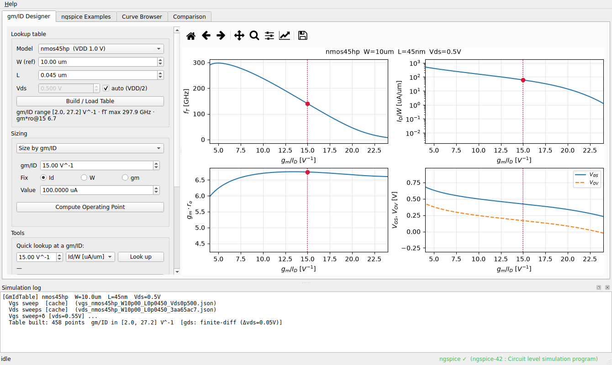
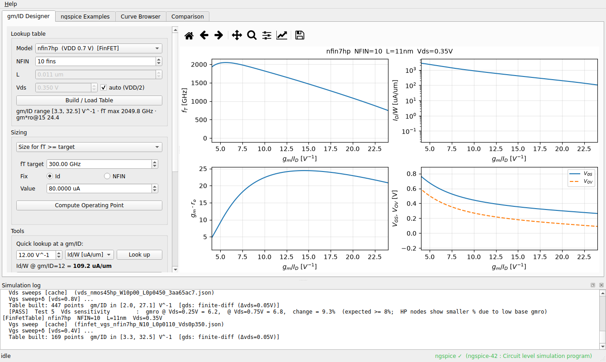
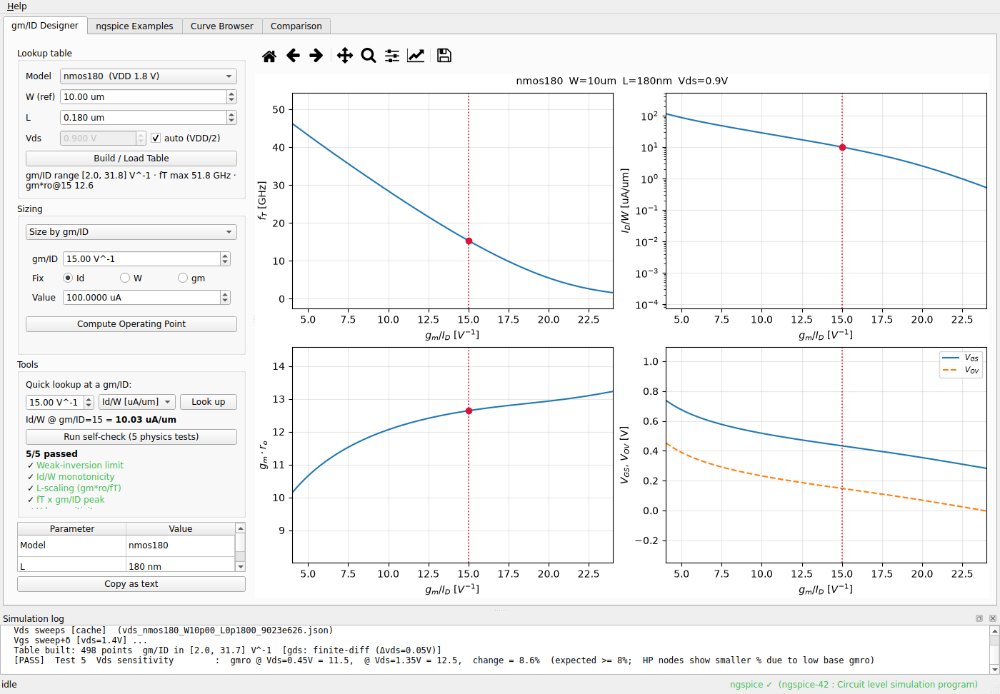
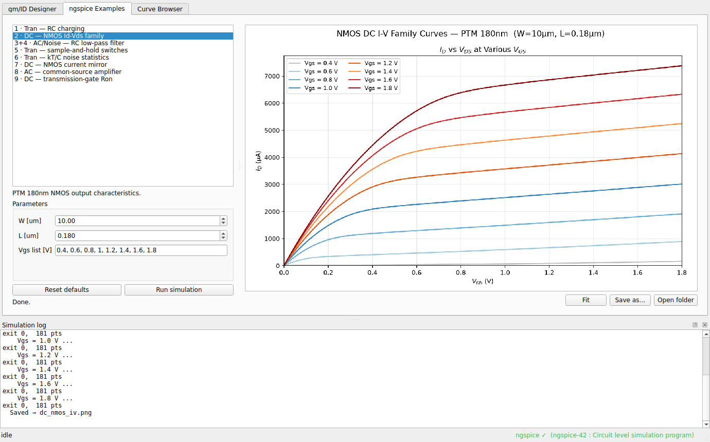
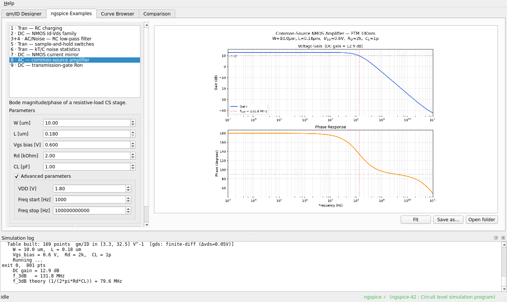
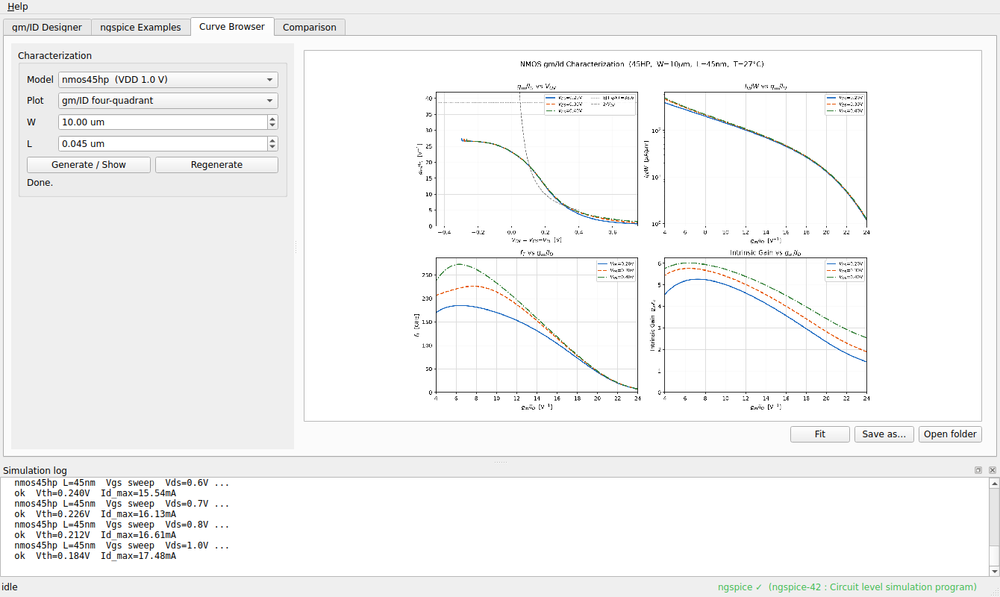
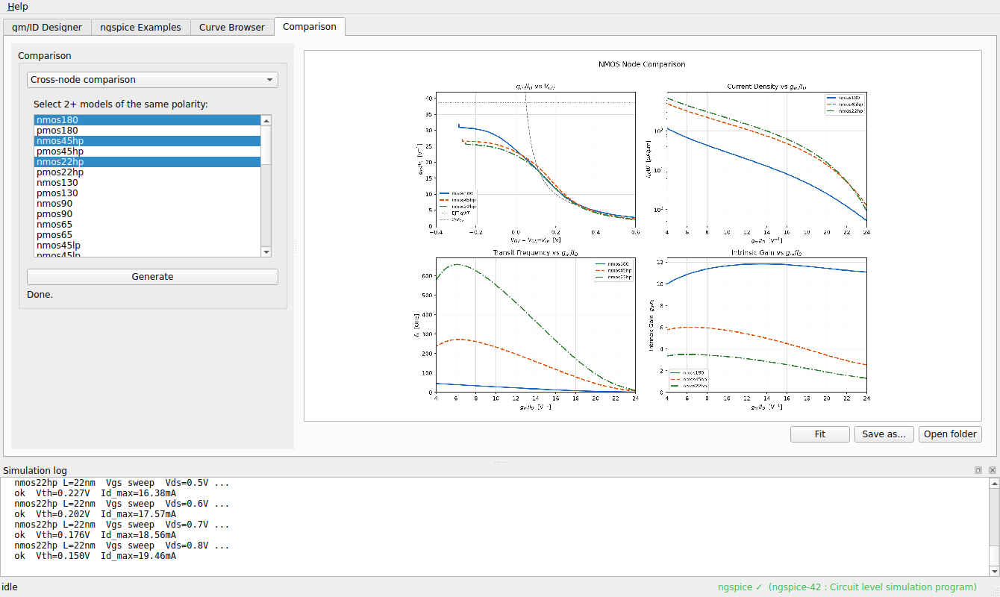
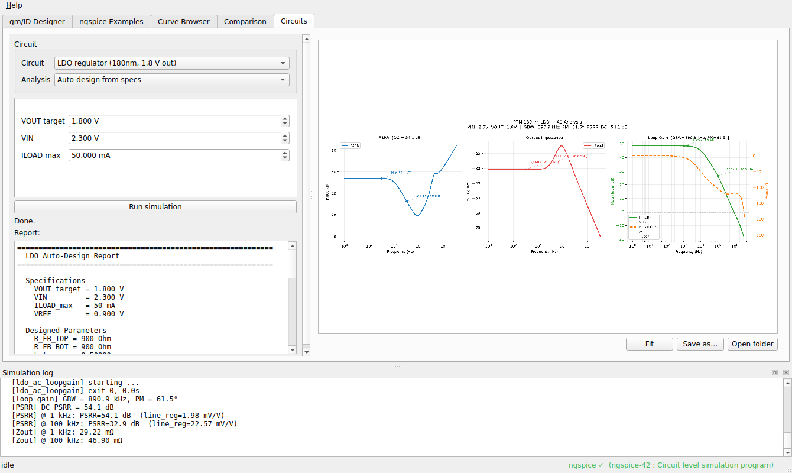
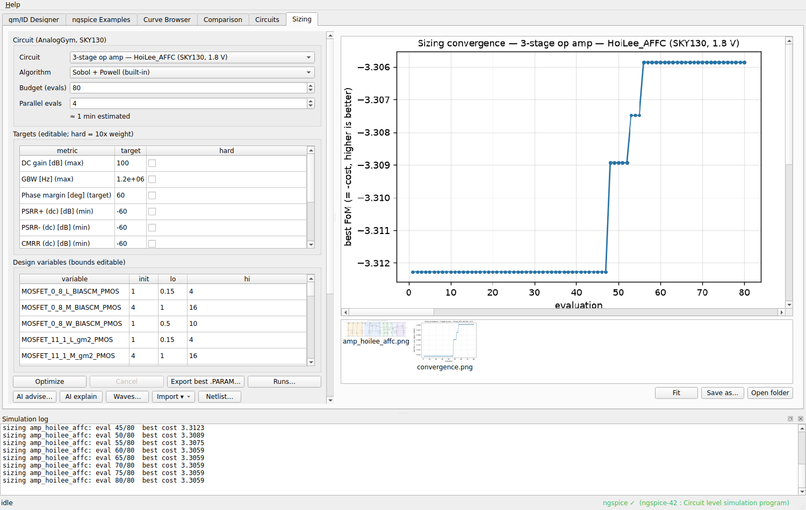

Analog Studio is an analog IC design and simulation workbench built on the ngspice simulator and PTM (Predictive Technology Model) process models. It provides four tools: the gm/ID Designer, ngspice teaching examples, a characteristic-curve browser, and comparison plots.
The application relies on a system-installed ngspice simulator:
Spice64/ folder next to the application exe
(zero configuration); or extract anywhere and set the path to
ngspice.exe in Settingssudo apt install ngspicebrew install ngspiceAfter launching, check the status bar at the bottom right:

A transistor sizing tool based on the gm/ID methodology: the transconductance efficiency gm/ID is the pivot variable, and sizing is done with simulation-generated lookup tables instead of long-channel equations — accurate even in advanced nodes.
[cache])Once built, the label below the button shows the table's valid range: gm/ID span, maximum fT, and gm·ro at gm/ID = 15. The right side displays four design charts — fT, Id/W (log scale), gm·ro, and Vgs & Vov — all versus gm/ID.
Available models: beyond the three built-in nodes (180 / 45hp / 22hp), the app registers the full PTM bulk-CMOS library — 130 / 90 / 65 nm, 45 nm LP, 32 nm HP/LP, 22 nm LP — for 20 nmos/pmos models, plus the PTM-MG FinFET nodes (7 / 10 / 14 / 16 / 20 nm, in HP and LSTP flavours, 20 nmos/pmos models tagged [FinFET] in the dropdown).
FinFET devices use the BSIM-CMG model (SPICE level 72). Most prebuilt
ngspice binaries do not compile BSIM-CMG in, but ngspice ≥ 38 supports
runtime model loading via OSDI: the app ships a precompiled
bsimcmg.osdi and loads it with pre_osdi before each
simulation, so FinFET runs on a stock OSDI-capable ngspice.
.osdi ships for your
platform, the FinFET entries are greyed out. Designer / Browser /
Comparison usage is otherwise identical to bulk.
FinFET designer: the size knob is NFIN, L is locked to the node, and the result reports NFIN / Weff.
Pick one of three modes in the Sizing box:
Click Compute Operating Point. The result appears in engineering units in the table at the bottom left (W, Id, gm, Vgs, Vov, fT, gm·ro, Id/W), and the operating point is marked on all four charts with a red dashed line and dot. Copy as text puts the result on the clipboard.
If a target exceeds what the table can deliver (e.g. fT above the maximum), the error is shown inline in red — nothing crashes.


Nine standard SPICE teaching examples covering DC, AC, transient and noise analyses:
Usage: select an example in the left list → adjust parameters in the form (resistances, capacitances, device sizes, bias voltages; Reset defaults restores them) → click Run simulation. The run executes in the background with live progress in the log panel; the resulting plot appears on the right when done.
The plot viewer supports wheel zoom and drag panning; Fit refits the view, Save as… exports the PNG and Open folder reveals the output directory.

Advanced parameters: each example shows its common parameters directly; expanding the collapsible Advanced parameters group exposes formerly hard-coded values — supply voltage VDD, sweep ranges and steps, frequency ranges, timing/clock, temperature, the sample-capacitor set, and more. (Note: the number of configurations per example — e.g. RC's two configs, the transmission gate's three nodes — is fixed by structure; the gate's Vpass sweep step lives inside a source function and is not tunable in this version.)

Generates standard characterization plots for any process model — useful for node comparison and device evaluation before design:
Choose model, plot type, W and L, then click Generate / Show. Plots are cached per parameter set within the session; Regenerate forces a fresh simulation.

Overlays several gm/ID curves on one four-quadrant figure for direct comparison. Three modes:
0.18, 0.36,
1.0) to show the fT-down / gm·ro-up trade-off as L growsResults are session-cached and support zoom/save. Cross-node and capacitance comparisons require all selected models to share one polarity (all nmos or all pmos), otherwise an inline red error is shown.

Brings the five block-level circuits of the vendored
circuit-skills collection into the GUI: pick a circuit, pick an
analysis, tweak parameters, hit Run — plots on the right, a copyable
monospace metrics report on the left.
Selecting a circuit immediately shows its schematic (drawn device-by-device from the DUT netlist, with device names, default sizes and the key node names). After a run the schematic stays first in the thumbnail strip, so topology and results can be compared side by side.


| Circuit | Node/supply | Analyses |
|---|---|---|
| StrongArm comparator | 45nm / 1.0V | full characterization; internal-node waveform; probit input-referred noise (1000 cycles, ~2 min); ramp transfer curve; four sweeps (input amplitude / common mode / valid-K / noise bandwidth); self-check (5 quantitative physics assertions with bounds from the skill's own evals) |
| LDO regulator | 180nm / 1.8V out | full characterization (DC/AC/noise/tran in parallel); individual runs; auto-design (sizes the LDO from VOUT/VIN/ILOAD, then verifies with an AC run); Ccomp/Rcomp/Cout compensation sweeps; theory vs simulation (poles/zero/PSRR/Zout) |
| Bootstrapped switch | 180nm | bootstrap waveform (VGATE ≈ VIN+VDD); on-resistance comparison (NMOS vs CMOS vs bootstrapped) |
| 5T OTA | 180nm | DC transfer; AC open loop (gain/UGB/phase); output noise |
| Two-stage Miller op amp | 180nm | operating point; gain/phase; PZ analysis (report includes the full pole-zero table); open/closed-loop noise |
The parameter form switches per circuit (device widths, bias, compensation network; rarely-used items live in the collapsible Advanced parameters group). Analyses with a note (probit noise, the sweeps) take minutes — watch per-point progress in the log panel; jobs queue serially as usual, so you can keep working in other tabs.
Note: two script-style entries of the collection (the comparator's
tail/latch-width τ=C/gm verifications) execute at import time and are
incompatible with the GUI's threading policy — run them from the command line
(see circuit-skills/comparator/SKILL.md).

Automatic device sizing over the vendored AnalogGym (ICCAD'24, BSD-3) open subset: 20 SKY130 circuits — 15 literature-grade three-stage Miller op amps plus the Basic LDO and 4 LDO variants, each validated on ngspice-42. Pick a circuit, edit variable bounds and metric targets, set a budget, hit Optimize. All 20 schematics are crisp device-by-device redraws from the netlists (since v1.4, replacing the low-res upstream screenshots; the Alfio amp and the five LDOs, which shipped none, now have schematics too):
optuna installed.PTM circuit-skills circuits: the Circuits-tab circuits plug into the same optimizer (marked "circuit-skills, PTM" in the drop-down), six entries in total: the 5T OTA (gain/UGB/phase margin, ~2 s/eval), the two-stage Miller op amp (plus power, ~5 s/eval), the LDO (loop gain/GBW/PM/PSRR, ~5 s/eval), the StrongArm comparator in two flavours — the full entry (input-referred noise σ / power / decision time; each evaluation runs 3×1000 transient-noise cycles, ~2 min, so keep budgets small) and a fast τ-proxy entry (latch time constant τ plus a total-width power proxy, ~1 s/eval; after the run the best point is automatically re-measured with one full probit evaluation and the report shows the verified σ / power / decision time) — and the bootstrapped switch (scalar metrics post-processed from its Ron testbench: peak sampling on-resistance ron_bts_max and max/min flatness; variables are the switch width W.sw and the clock frequency, ~0.5 s/eval). Variables are the same parameter set as the Circuits tab (incl. the W.xxx width dictionary); optimization runs on the PTM models and the best sizing can be fed back into the Circuits tab for full characterization.
Current-mirror OTA ("Current-mirror OTA — Analog Studio" in the
drop-down): every other open, device-accurate, licensed circuit source is
already wired in (AnalogGym's 20 + circuit-skills' 6); the external
LLM-benchmark repos (AnalogCoder, Analogagent) ship only level-1 ideal
MOSFET models — and AnalogCoder has no license — so they don't fit this
real-PDK pipeline. This entry is therefore an original (non-vendored,
studio_circuits/) single-stage PMOS-input symmetric OTA that
reuses the AnalogGym .subckt gnda vdda vinn vinp vout contract
and shared testbench, so it earns the same full 9-metric report. Self-biased
from one internal reference current with every internal node diode-connected,
it converges robustly across the whole sizing box (unlike a cascode topology
that needs delicate external bias voltages); default ≈ 42 dB / 0.37 MHz /
PM 90° / 0.42 mW, with a genuine gain ↔ GBW ↔ power trade-off on its 500 pF
load. It evaluates in parallel like the AnalogGym amps.
Waveform comparison (Waves…): available for all 27 circuits. After a run finishes (or is loaded from Runs…) the Waves… button re-characterizes the default and the optimized sizing and overlays the swept curves (grey dashed = default, solid = optimized), with panels per circuit family: amplifiers (15 AnalogGym + studio CM-OTA) — differential gain/phase Bode, PSRR± vs frequency, Vout vs temperature; LDOs (basic + 4 variants) — loop gain and phase at max/min load, PSRR, and the Vout-vs-VDD line-regulation sweep; 5T OTA / two-stage op amp — gain/phase Bode; the skill LDO — loop gain/phase + PSRR + output impedance; the StrongArm comparator (both entries) — latch and output transients with τ annotated; the bootstrapped switch — Ron vs Vin plus a switch-type comparison. Seconds for the skill circuits, ~10–20 s (two ngspice runs) for amps/LDOs. The figure joins the thumbnail strip.
Device-change summary: every run report now includes a
"device changes vs default" section — AnalogGym variables are grouped
per device (e.g. MOSFET_9_2 gm1_PMOS W 1->5.89 M
4->14), ordered by how much each device changed, with
capacitors / bias currents as flat lines and unchanged variables
collapsed into a count. It applies to all 27 circuits (skill circuits
fall back to flat per-variable lines) and shows up in the report box,
in Runs… → Load, and in the AI-explain prompt.
Design import & netlist viewer: the Import ▾ menu
offers two imports — "Sizing values (.PARAM)…" loads a previously
exported (or hand-edited) parameter file back into the variables table's
init column as a starting point; "Custom circuit…" imports your own
SKY130 amplifier design as a new optimizable circuit. The netlist must
follow the AnalogGym amplifier contract
.subckt <name> gnda vdda vinn vinp vout (self-biased, no
extra bias pins) and come with its .PARAM design-variables file; on
import it is copied into the writable user-data store
(user_circuits/, kept outside the versioned workspace so it
survives app upgrades), registered in
the circuit drop-down, and validated with one real evaluation (a netlist
that produces no metrics is rejected and removed). A netlist is code,
not just data: ngspice executes .control blocks, so an
imported design carrying one could run arbitrary commands on your machine.
It also reads whatever
.include points at, and puts what it read into the run log.
Import therefore refuses any netlist or .PARAM file containing a
.control, .include, .inc or
.lib directive — the amplifier contract is a plain
.subckt and needs none of them. Treat designs from strangers
with the same care as any downloaded script. Imported circuits
get the full pipeline: 9-metric report, parallel evaluation, Waves…
comparison, device-change summary and the AI features. Only the
amplifier contract is supported in this version. Netlist… opens a
viewer with the current circuit's design files — DUT netlist, design
variables (rendered with the table's current init values) and the fully
rendered testbench (absolute includes, DUT substituted); circuit-skills
circuits show their .cir.tmpl templates; imported circuits
can be removed from this dialog.
Run management: every completed optimization is auto-saved as
JSON (user-data store sizing_runs/, preserved across app
upgrades). Runs… opens the list of
saved runs — Load restores the report and convergence curve,
Compare overlays the convergence curves of several selected runs,
Use best as init writes a run's best sizing back into the
variables-table init column (warm start, to refine further with a larger
budget), and Delete cleans up old records.
The SKY130 PDK (~109 MB) is extracted from the bundled zip into the workspace on first use and survives app upgrades. Two upstream circuits are not registered due to upstream defects: Qu_LEC (empty netlist) and Tan_CLIA (default width below the model-bin range). Requires ngspice ≥ 42 (ngspice 41 has known temperature/current DC-sweep bugs).
Configure once under Settings → LLM: pick a protocol
(OpenAI-compatible — OpenAI / DeepSeek / Qwen / local Ollama …,
or Anthropic for Claude), fill in base URL, API key (optional for
local endpoints) and model name, then hit Test. Examples: DeepSeek =
https://api.deepseek.com/v1 + key +
deepseek-chat; local Ollama =
http://localhost:11434/v1 + a model name.
Privacy: AI features send netlist excerpts, the
variable/metric tables and result reports to the endpoint you configured
(a local Ollama endpoint never leaves your machine). The API key is
stored in local QSettings only, in plain text (the registry on
Windows, an ini file elsewhere). On a machine you share with others, set
the key in the ANALOG_LLM_API_KEY environment variable
instead: it overrides the saved one, the Settings dialog shows it
read-only, and it is never written to disk. Leaving the model empty disables all AI
features; everything else is unaffected. Each LLM round adds seconds of
latency that the budget time estimate does not include.
The Simulation log panel at the bottom streams all simulation progress and ngspice output in real time; on failure it includes the error details plus the tail of the latest ngspice log file. The panel can be docked to the right or floated.
All simulation jobs go through a single background queue and run serially: launching several jobs queues them in order, the UI stays responsive throughout, and the currently running job is shown at the left of the status bar.
| Symptom | Remedy |
|---|---|
| Red banner "ngspice not found" | Install ngspice (section 1), or click Locate… and set the path manually |
| Table build is slow | The first build runs full sweeps — that is normal. Identical parameters hit the cache from the second time on (instant) |
| Sizing shows a red error | The target exceeds what this model/length can deliver; increase L (raises gm·ro) or relax the target |
| A simulation fails | Check the error details in the log panel; common causes are missing model files or parameters far outside a reasonable range |
Output locations: in development mode, plots/ and
logs/ inside each toolkit directory; in the packaged build,
under AnalogStudio/workspace/ in the per-user data directory —
the installation directory is never written to.